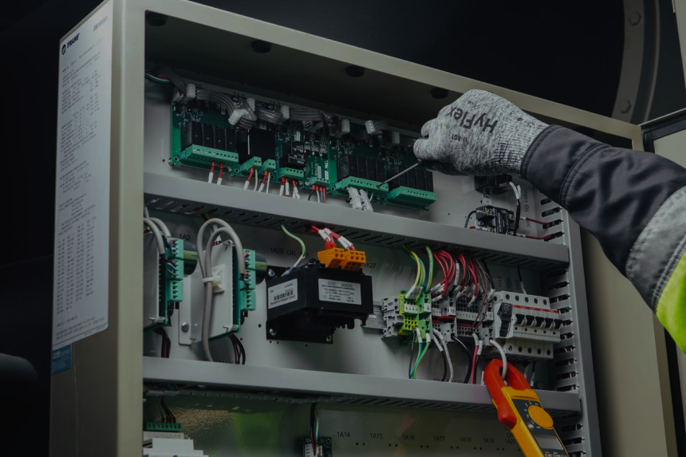

ТРАДИЦИОННЫЙ СЕРВИС И ТО

Согласно нашим стандартам качества сервиса, мы используем методику диагностическо-прогностического ТО, а также плановые замены запчастей, обеспечивая эффективную и бесперебойную работу оборудования на протяжении всего жизненного цикла.
Данная методика заключается в своевременном выполнении диагностических мероприятий и анализе полученных значений для оценки изменения трендов состояния чиллера и своевременном реагировании на проблему.
оформить заявку